テパチェを作ってみる
材料の調達
２月２６日
スーパーでパイナップルを売っていた（機能性表示食品だった）ので買ってきました。
ピロンシージョは、ネットでも見つけられなかったので、沖縄の黒糖を使うことにしました。
シナモンは、埼玉の家に以前大量に買ったものがあるので、週末戻ったときに持ってくることにしました。
クローブは、焼きりんご用に買ってあったものが少し残っているのでそれを使うことにしました。
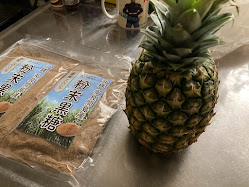
材料の仕込み
３月４日
埼玉の家に戻った際にシナモンを持ち帰ってきたので、仕込むことにしました。
シナモンは、以前、ノンアルコールジン（もどき）を作ってみようと思って色々買ったスパイスの一つで、
しばらくジュニパーベリーなどをすり鉢で挽いてアルコールに漬けて抽出してアルコールを飛ばしたりして作っていましたが、
単身赴任になって放置していたものです。
さて、「tepache receta」で検索して出てきたレシピを色々みましたが、どれも分量がまちまちだったので、
以下の分量で仕込んでみました。
・ パイナップル１個（頭とお尻を切り落として、皮も実も適当な大きさに切りました。芯も使いました。）
・ 黒糖２５０ｇ（ピロンシージョが手に入らなかったのであまり精製されてなさそうな粉の黒糖をネットで買いました）
・ シナモン４かけ
・ クローブ３～４個
レシピ
１．切ったパイナップルを容器に入れる（適当な大きさの容器がなかったので、ゴミ箱に新しいゴミ袋を被せたものを使いました）
２．シナモンとクローブを入れる。
３．水２リットルに黒糖２５０ｇを溶かして加える。
４．ネット情報では、１２時間または２４時間後に白い泡を取る。２～３日で完成。長く置くと酢になってしまうらしいので、まず明日、様子をみます。
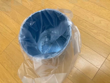
容器の代わりのゴミ箱とゴミ袋
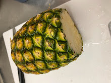
パイナップルの頭とお尻を切り落とした
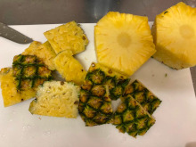
適当なサイズに切った。皮も実も芯も使う（本来は皮だけを使うことが多いようです）
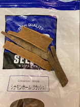
シナモン
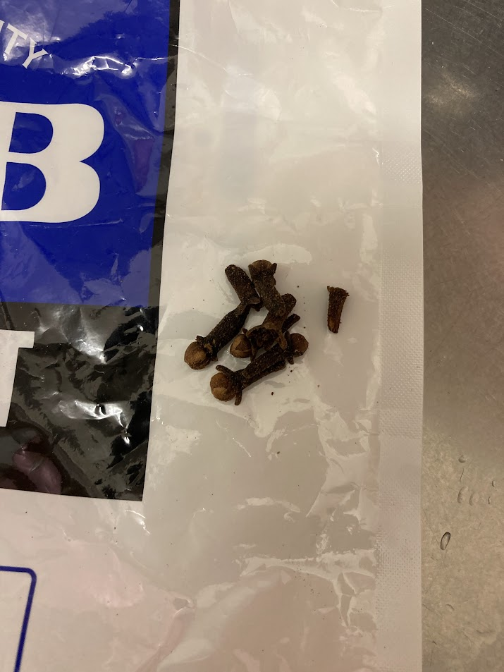
クローブ
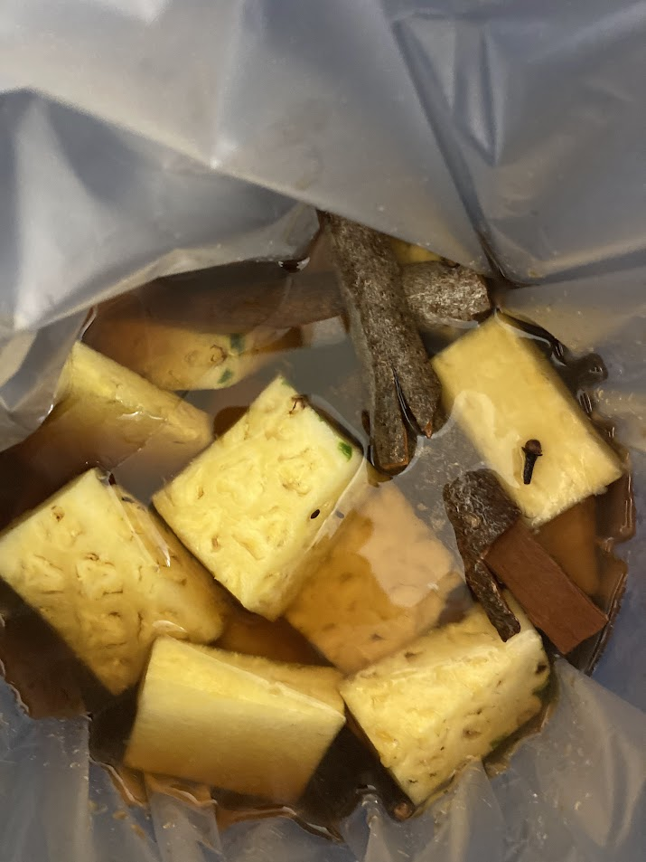
仕込んだ様子
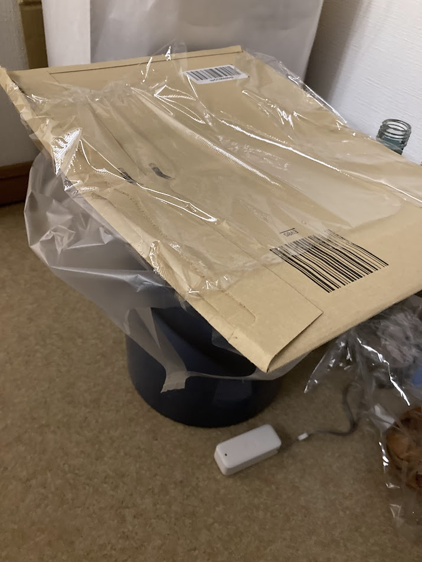
ラップで包んだ厚紙を軽く上に載せた
SwitchBot 温度計をそばに置いた
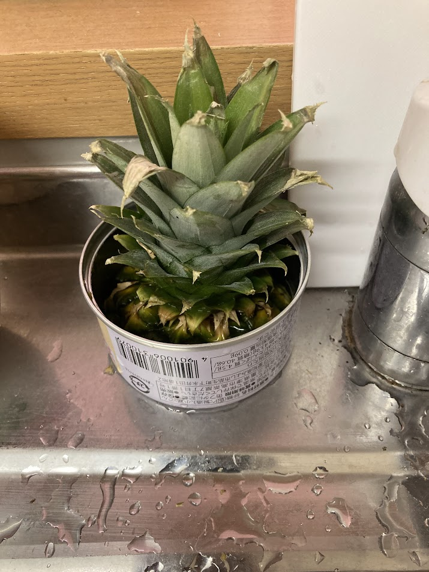
頭は空き缶に生けてみた。
取出し
３月１０日
コーヒーフィルターで濾しながら取出してみた。
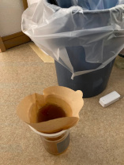

味は、リンゴジュースのような酸味が少しあって、パイナップルの香りがしっかりとして、
ほのかに紅茶っぽい発酵感があるフルーティーで甘い飲み物になっていました。
炭酸水で少し割ってもいいし、温めて紅茶に足してみたら、フレーバーティーのようになって
それもアリだなと思いました。
この間の温度変化は、SwitchBot の温度計で測ってみたら以下のようでした。
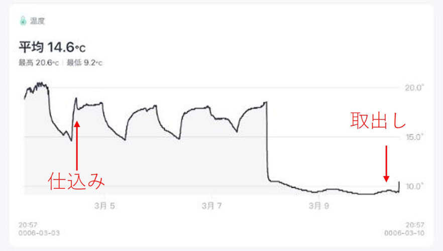
まだまだ残っているので、毎日、マグカップ１杯ずつ飲んで、味の変化を見てみようと思います。
※ 食品衛生上の問題がある可能性がありますので、同じように作ってお腹を壊さない保証はありません。
やるときはあくまで自己責任でお願いします。（今回、私は何ともありませんでしたが、運が良かっただけかもしれません。）